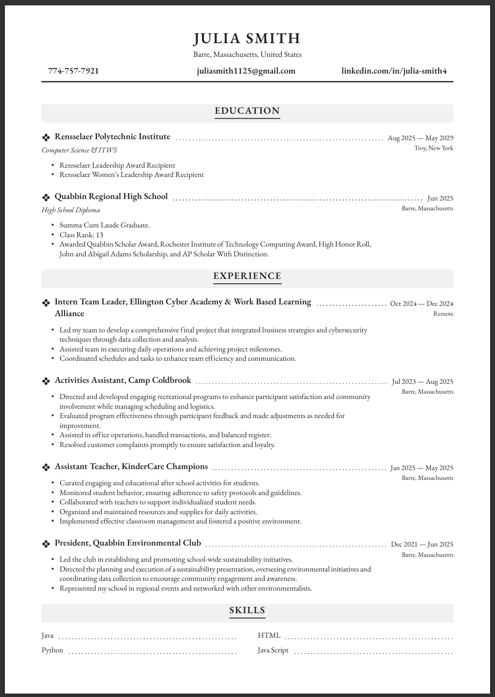

Lab 2
Lab 2's Purpose
The focus with lab 2 was to create a web page that creatively and professionally represents our skills and talents. The resume and supporting images are shown below.

Lab 2's Purpose
The focus with lab 2 was to create a web page that creatively and professionally represents our skills and talents. The resume and supporting images are shown below.
